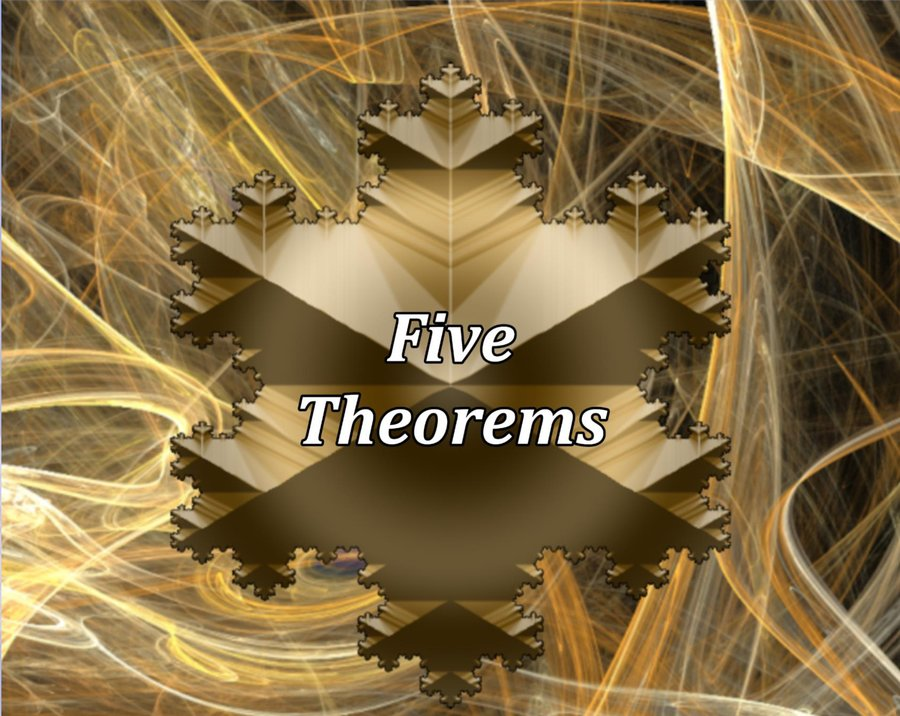

VPPE: Application of Scaled Vecchia Approximations to Parallel Partial Emulation
Josh Seidman
PhD Candidate
Department of Mathematical and Statistical Sciences
Marquette University
Milwaukee, WI
Marquette University
Milwaukee, WI
Research interests
I'm an applied mathematician working in scientific machine learning and uncertainty quantification, advised by Elaine Spiller. My research develops scalable statistical surrogates, called emulators, for expensive computer models of physical processes such as debris flows and other geophysical hazards.
- Gaussian process emulation and Vecchia approximations
- Deep Gaussian processes for high-dimensional model output
- Neural network models for geophysical flows
- Clinical prediction tools for health data
Additional interests
- Sports
- Soccer, Football, Playoff Baseball
- Video games
- Apex Legends, Hunt: Showdown, Striker's Club
- Movies
- Inception, The Dark Knight, Whiplash, It's a Wonderful Life, The Room
- TV shows
- Breaking Bad, Ted Lasso, Chernobyl, BoJack Horseman
- Books
- Mistborn, 11/22/63, Project Hail Mary, Pendragon
Games and fun math

Play my game Five Theorems, inspired by the game of 24!
Inspired by the Game of 24, play this mental math game where you race against the clock to formulate math expressions equal to a specific goal.
I was inspired to develop this game since most math games do not incorporate higher level math concepts (number theory, topology, etc.) as a part of the core aspects of the game.
While you do not need knowledge of higher level math to play this game, I hope that the inclusion of these higher level concepts enhances the game for all players no matter their math knowledge. The higher level concepts are explained in a simplistic manner so that anyone can utilize them in the game, but players with higher level knowledge will understand where these game mechanics come from!
Play Five Theorems
August 11, 2026 solution image goes here
Check out my solutions to the Your Daily Epsilon of Math Calendar!
This year I have been typing up solutions to the math calendar Your Daily Epsilon of Math by Rebecca Rapoport and Dean Chung. In the PDFs I've included both solutions done by hand and solutions solved using MATLAB.
Here's an example of a code solution for August 11th, 2026, where I needed to solve for the maximum number of regions created by 4 segments in a circle. I sampled 4 random segments, and then a bunch of points in a circle, classified all the points and computed the number of different regions that way!
See all my DEoM solutionsPublications
Journal articles
Conference papers
A Robust Scaled Vecchia Gaussian Process Approach for Computer Model-Based Learning of Physical Processes
In preparation
Grouped Deep Gaussian Process Emulation using Stochastic Imputation for handling non-stationarity and massive model output
Teaching
Recipient of the S.J. Merrill Award for Best Teaching Assistant (Marquette University, 2025) and the David A. Rothrock Teaching Fellowship for excellence in teaching mathematics (Indiana University, 2020).
Marquette University
Precalculus
Calculus for the Biological Sciences
Elementary Statistics
Calculus 2 for Biomedical and Civil Engineers
Differential Equations
Calculus 2
Lake Zurich Community Unit School District 95
Algebra 2 and Geometry
Indiana University
Finite Mathematics
Introduction to Algebra
College Algebra
Peer Assisted Study Sessions
Talks
A Robust Scaled Vecchia Gaussian Process Approach for Computer Model-Based Learning of Physical Processes
VPPE: Application of Scaled Vecchia Approximations to Parallel Partial Emulation
Using the Expectation-Maximization Algorithm to Estimate Timestamps of Soccer Events
The Game of 24
Imputation for Zero-Censored Gaussian Processes and Adaptive Annealed Importance Sampling
Projects
More of my work is on my GitHub profile.
Research
Custom kernels in RobustGaSP
VPPE
zGP
AAIS_R
Class
R Shiny app for the EM algorithm
PCA for facial detection
Fun
Your Daily Epsilon of Math Solutions
Every year I get the Your Daily Epsilon of Math calendar by Rebecca Rapoport and Dean Chung, so this year I decided to type up all my solutions in LaTeX and post them on GitHub. I've also included MATLAB code solutions for (almost) every problem!
Loading the list of solutions…